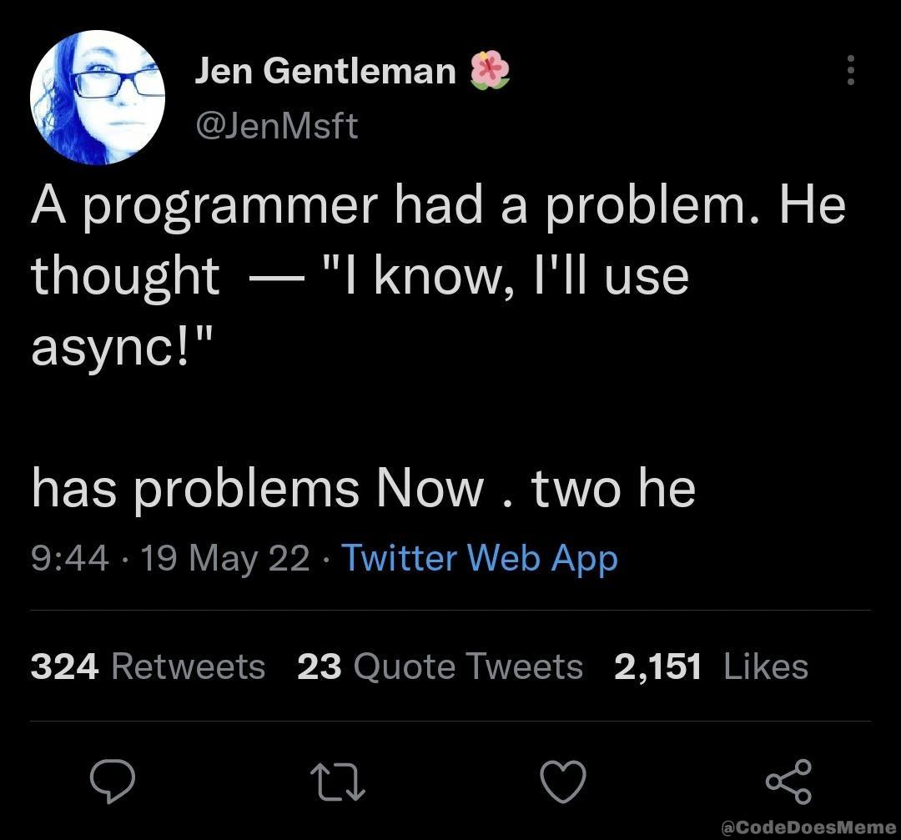
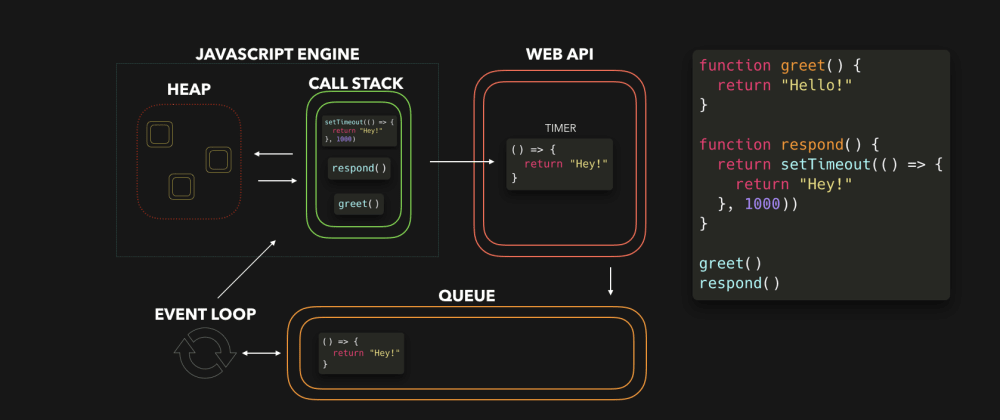

La programmation asynchrone en JavaScript
Programmation événementielle \(\approxeq\) asynchrone

 Source : JavaScript Visualized: Event Loop
oneventconst $output = document.getElementById("output");
const $input = document.getElementById("input");
const $eval = document.getElementById("eval");
function work() {
$output.innerHTML += `${$input.value ** 2 + 1}<br/>`;
}
$eval.addEventListener("click", work);Voir l’exemple.
console.log("Start"); // (A)
setTimeout(
// (T1)
() => console.log("Call back #1"), // (CB1)
0,
);
console.log("Middle"); // (B)
setTimeout(
// (T2)
() => console.log("Call back #2"), // (CB2)
0,
);
console.log("End"); // (C)NB : setTimeout(fct, 0) rend fct async.
Qu-est-ce qui s’affiche dans la console ? (exemple)
const s = new Date().getSeconds();
setTimeout(function () {
console.log("Ran after " + (new Date().getSeconds() - s) + " seconds");
}, 0);
while (true) {
if (new Date().getSeconds() - s >= 2) {
console.log("Good, looped for 2 seconds");
break;
}
}Qu-est-ce qui s’affiche dans la console ? (exemple)
Voir documentations sur javascript.info, MDN ou Node.js
// KO: pas de paramètre
setTimeout(work, 0);
// KO: typeof(work(2)) == "number"
setTimeout(work(2), 0);
// OK! avec function explicite
setTimeout(function () {
return work(2);
}, 0);
// OK! avec fat arrow
setTimeout(() => work(2), 0);Mais comment récupérer la valeur de retour de l’appel à work(n) ?
returnfunction work(x) {
console.info(`work(${x})`);
return x ** 2;
}
function async_work(n) {
return setTimeout(() => work(n), 0);
}
const r1 = async_work(12);
console.log(r1);Qu-est-ce qui s’affiche dans la console ? (exemple)
function work(x, cb) {
console.info(`work(${x})`);
cb(x ** 2);
console.info(`work done`);
}
function async_work(n, cb) {
return setTimeout(() => work(n, cb), 0);
}
const r1 = async_work(3, (r) => console.log(r));Qu-est-ce qui s’affiche dans la console ? (exemple)
Phénomène appellé pyramid of doom ou callback hell
function async_work(n, cb) {
return setTimeout(() => cb(n ** 2), 0);
}
async_work(3, (r1) => {
console.log(r1);
async_work(r1, (r2) => {
console.log(r2);
async_work(r2, (r3) => console.log(r3));
});
});Qu-est-ce qui s’affiche dans la console ? (exemple)
https://nodejs.org/en/knowledge/errors/what-are-the-error-conventions/
So to wrap it all up, when using callbacks, if an error comes up, then pass it as the first argument. Otherwise, pass null first, and then your return arguments. On the receiving end, inside the callback function, check if the first parameter is non-null. If it is non-null, then handle it as an error.
const fs = require("fs");
const mypath = "async-node-fs-readfile.js";
console.log("Lancement lecture asynchrone file...");
fs.readFile(mypath, "utf8", function (err, data) {
if (err) {
return console.error(err);
}
console.log(">>>");
console.log(data);
console.log("<<<");
});
console.log("...lecture lancée");Voir exemple
setTimeoutdone soit ajouté à output1 au bout du nombre de secondes saisi dans input1Done! dans output1.setInterval
Comment rendre une fonction
workasynchrone ?setTimeout(fct, 0)fctdoit être une fonction, pas une valeurfct()Ce n’est pas la meilleure façon de rendre une fonction asynchrone.